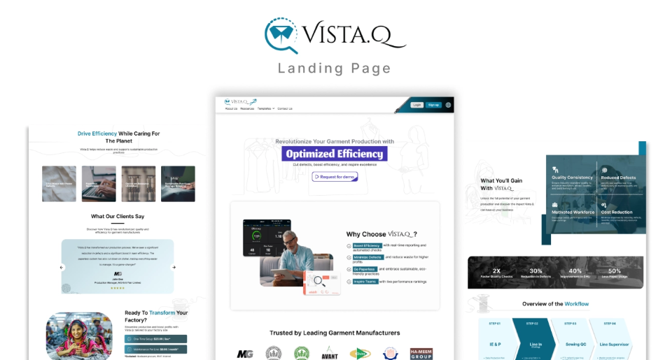
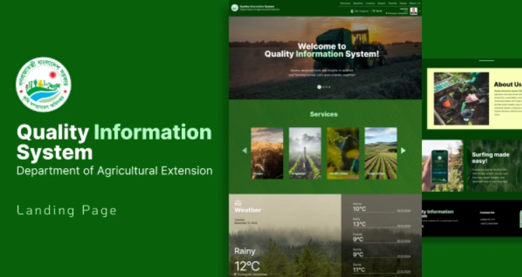

WHAT I'VE BEEN WORKING ON
My Projects
A collection of projects exploring Artificial Intelligence, Natural Language Processing, and practical applications of machine learning alongside other side projects.
AI & Machine Learning

Research Evidence Agent (Ongoing)
Python · Gemini API · Qdrant · FastAPI · Docker
Research Evidence Agent (Ongoing)
Python · Gemini API · Qdrant · FastAPI · Docker
I am developing a research assistant that retrieves relevant information from academic papers and uses it to generate answers grounded in the source documents. The project explores how Retrieval-Augmented Generation (RAG) can make it easier to find information in research papers without relying entirely on an LLM's existing knowledge.
Approach: I used PyMuPDF to extract text from PDF documents and divided the extracted content into smaller, overlapping chunks. These chunks were converted into vector embeddings using Google's Gemini embedding model and stored in a local Qdrant database. When a question is submitted, the application retrieves relevant chunks and passes them to a Gemini model to generate an answer based on the retrieved content.
Implementation: I built the backend using FastAPI and containerised the application with Docker. The project also uses a checkpoint mechanism during document processing to help manage the indexing process.
Current scope: The initial version has been tested with two research papers, producing 92 document chunks for retrieval. It serves as a working prototype for exploring document processing, vector search, and LLM-based question answering.
Technologies: Python · PyMuPDF · Gemini API · Qdrant · FastAPI · Docker
Year: 2026

NLP Study Assistant
Python · Gemini API · Google GenAI SDK
NLP Study Assistant
Python · Gemini API · Google GenAI SDK
A command-line AI learning assistant designed to support beginner NLP students. It provides concept explanations, practice questions, and feedback on submitted answers.
The application also incorporates conversation history management, token tracking, response validation, and retry handling.
Year: 2026
GitHub Repository ↗

Community Stress Tracker AI
Python · PyTorch · DistilBERT · Streamlit
Community Stress Tracker AI
Python · PyTorch · DistilBERT · Streamlit
A group-developed AI system that analyses social media text to estimate community stress levels across five emotion classes.
Built using DistilBERT, the system achieved 82.67% accuracy and includes stress scoring, score normalisation, and batch-level aggregation.
Year: 2026
GitHub Repository ↗

PDCOVIDNet-2
Python · PyTorch · Torchvision · Scikit-learn
PDCOVIDNet-2
Python · PyTorch · Torchvision · Scikit-learn
A course project developed for Computer Vision and Robotics, implementing a custom convolutional neural network to classify chest X-ray images into three categories: COVID-19, viral pneumonia, and normal.
Approach: The model uses two parallel branches of convolutional blocks with different dilation rates (1 and 2) to extract image features. Their outputs are combined and passed through additional convolutional and fully connected layers for classification.
Implementation: I worked with the Chest X-ray Images dataset from Kaggle. Images were resized to 224 × 224 and converted to grayscale. To address class imbalance, the training process incorporates WeightedRandomSampler and class-weighted loss, along with image augmentation techniques. Model performance is evaluated using accuracy, precision, recall, and macro F1-score.
The implementation was inspired by the research paper PDCOVIDNet: A Parallel-Dilated Convolutional Neural Network Architecture for Detecting COVID-19 from Chest X-ray Images (Chowdhury et al., 2020).
Technologies: Python · PyTorch · Torchvision · NumPy · Pandas · Scikit-learn · Matplotlib
Year: 2026
GitHub Repository ↗ Reference Paper ↗

Irony Detection in Tweets
Python · NLTK · Scikit-learn · TF-IDF
Irony Detection in Tweets
Python · NLTK · Scikit-learn · TF-IDF
An NLP-based binary text classification project developed for the Introduction to Data Science course. The project focuses on detecting irony in Twitter text by classifying tweets as either ironic or non-ironic.
The workflow includes tokenisation, language detection, emoticon-to-text conversion, accented character removal, stemming, and stopword removal. The processed text is transformed into n-gram TF-IDF features. Five Scikit-learn classifiers were implemented and compared: Multinomial Naive Bayes, LinearSVC, Stochastic Gradient Descent (SGD), Decision Tree, and Multi-layer Perceptron (MLP).
Evaluation: In the original comparative evaluation, SGD achieved the best reported performance, with 65% accuracy and a 65% micro-average F1-score. MLP achieved an F1-score of 55% in that comparison. The latest notebook also contains a separate MLP implementation, with a reported score of 55%.
Approach: Text preprocessing · TF-IDF feature extraction · Machine learning classifier comparison · Performance evaluation
Technologies: Python · NLTK · Scikit-learn · Pandas · NumPy
Year: 2024
GitHub Repository ↗Other Projects

Vista.Q
Figma · UI Design · Wireframing · Prototyping

Vista.Q
Figma · UI Design · Wireframing · Prototyping
A collaborative UI/UX design project developed during my internship at TechnoVista Ltd. The project involved designing Vista.Q, a real-time quality tracking system intended for garment factories.
The interface was designed to support production monitoring and quality management, with a focus on making information accessible through a clear, user-friendly, and device-compatible design.
Focus: UI design · Wireframing · Prototyping
Tools: Figma
Year: 2025

Quality Information System
Figma · UI Design · Wireframing · Prototyping

Quality Information System
Figma · UI Design · Wireframing · Prototyping
A collaborative UI design project developed during my internship at TechnoVista Ltd. It focused on the Quality Information System (QIS), a digital platform by the Ministry of Agriculture of Bangladesh designed to provide accessible agricultural services.
The design incorporated features such as weather updates and access to different services, with an emphasis on clear navigation and a user-friendly interface for farmers and other stakeholders.
Focus: UI design · Wireframing · Prototyping
Tools: Figma
Year: 2024

HomiFi - Accommodation Booking System
Figma · UI Design · Wireframing · Prototyping
HomiFi - Accommodation Booking System
Figma · UI Design · Wireframing · Prototyping
A collaborative UI design project for an accommodation booking system that brings together different types of stays, including hotels, apartments, private rooms, and locally hosted rentals.
The project focused on making affordable and locally hosted accommodation options easier to discover and book. The proposed platform allows users to search and explore different stays through a unified interface.
Focus: UI design · Wireframing · Prototyping · Requirements Analysis
Tools: Figma
Year: 2024
Imbricating Colorful Squares
Python
Imbricating Colorful Squares
Python
A final graphics project developed using Python for the Code In Place Certification course.
The design features a series of nested, vibrant squares, demonstrating the use of loops, color theory, and geometric precision.
Year: 2023
GitHub Repository ↗